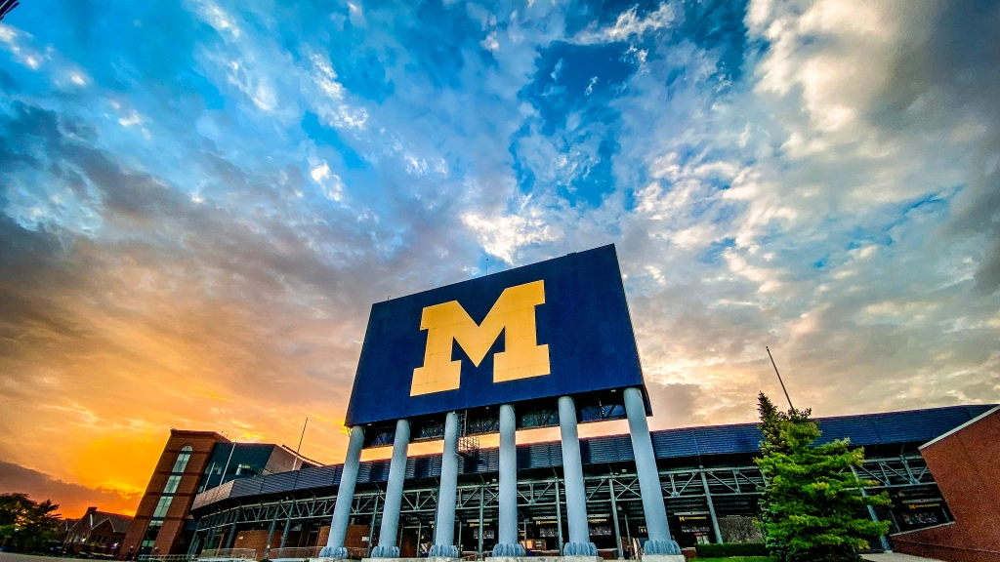
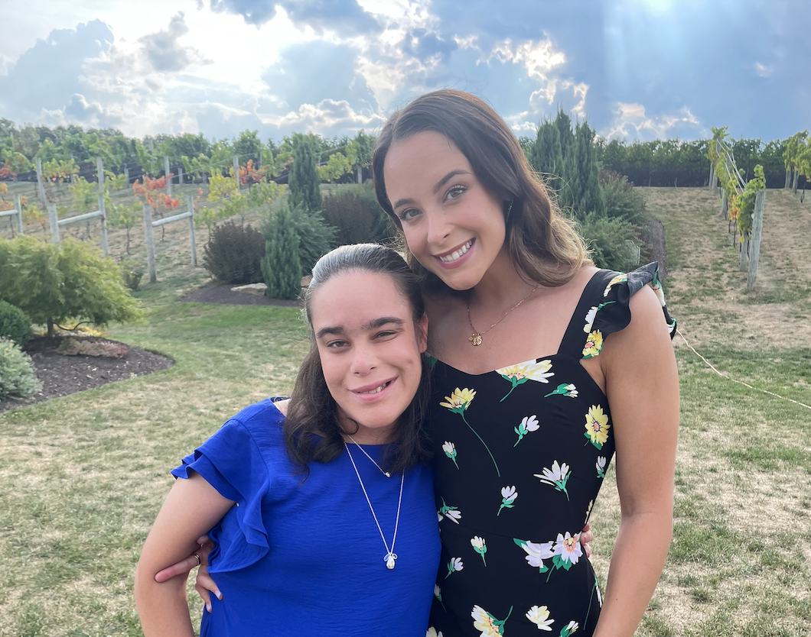
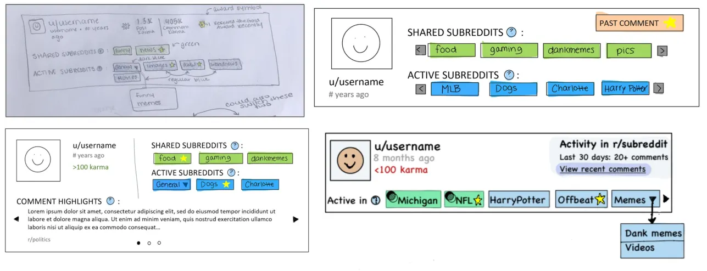
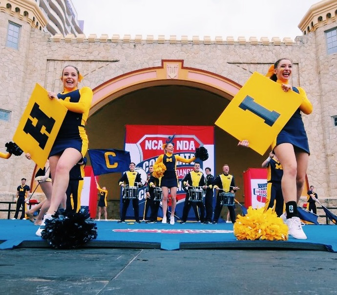
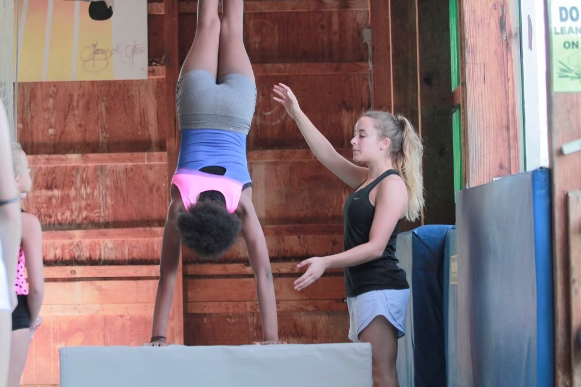

Education
I graduated from the University of Michigan, Ann Arbor in 2021 with a B.S. in Information, specializing in User Experience Design.
I also graduated with a Spanish Language, Literature, and Culture Minor, and a Minor in Business.
Travel
In my free time, I like to plan my next travel adventures. My favorites have been Albuquerque, New Mexico for the International Balloon Fiesta, and Northern California including Yosemite National Park.
Click here to view some recent photos.

Family
I have a twin sister! She's my best friend who has inspired me throughout my career. She's always overcoming challenges due to her disabilities, and I strive to design products that are accessible for people like her.

Research
In college, I worked with two PhD students to improve a browser extension that encourages Reddit users to participate in more deliberate political discussions. I conducted interviews and user testing, and developed prototypes to support their research.
UMSI Center for Social Media Responsibility
CSCW Publication (ResearchGate)

Sports
I was a Varsity Athlete on the University of Michigan Cheerleading Team. During my time on the team, we won two National Championships.
I was also a member of the Club Gymnastics team, where I still compete as an alum.
Go Blue!

Coaching
As a part-time gymnastics coach, I love getting to know athletes in order to understand how to best set them up for confidence and success. I've translated this practice into the way I design and advocate for users in my current work.